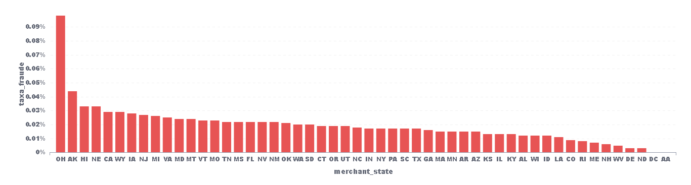
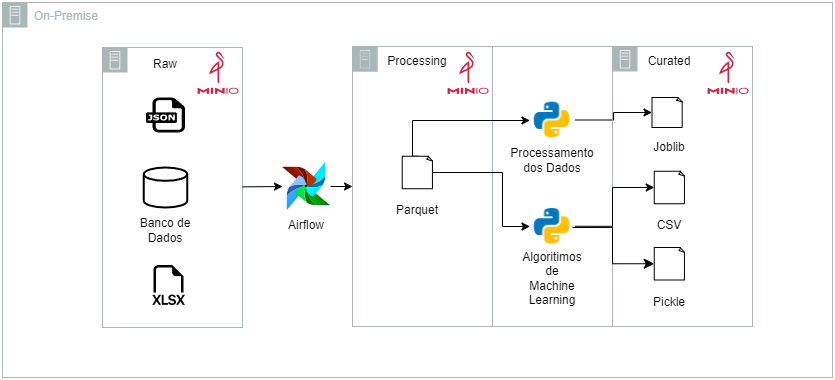
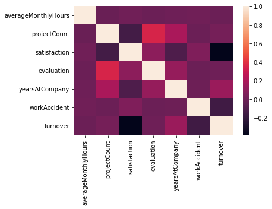

Área de Projetos
Premissas, ferramentas e soluções serão apresentadas
Premissas
O projeto se trata sobre a Análise de Dados de um case de aluguel de bicicleta pela empresa Divvy em Chicago entre os anos de 2014 e 2017.
O principal objetivo desse projeto é entender melhor o perfil situacional da utilização das bicicletas, o perfil do usuário e um pouco mais sobre as principais estações que são utilizadas por esses usuários.
Ao todo, o projeto foi separado em 3 fases:
- Arquitetura de Dados
- Entendimento e Processamento dos Dados
- Análise dos Dados
Principais Ferramentas:
- AWS
- PySpark
- SQL
- Metabase
Arquitetura de Dados
Nessa etapa, o objetivo foi desenhar a arquitetura, isto é, o caminho pelo qual os dados partiriam desde o computador até a disponibilização para a ferramenta de visualização de dados. Abaixo, pode-se observar o desenho dessa arquitetura:

- Tudo se inicia com o download dos dados do case Chicago Divvy no Kaggle.
- Após isso, os dados são inseridos em um bucket, chamado de Raw, no S3 dentro da AWS. Esses dados chegarão brutos, em .csv, e serão processados pelo EMR (Elastic Map Reduce) e serão salvos em .parquet em outro bucket no S3, chamado de Curated.
- A partir desse dado em .parquet, haverá um acionamento de um crawler no Glue, responsável por entender a estrutura e o tipo dos dados, para catalogar como esses dados estão dispostos no arquivo e qual é o formato de cada uma das colunas.
- Seguindo o caminho dos dados até a visualização, faz-se necessária a utilização do Redshift Spectrum, que permite a leitura de arquivos no S3 pelo Redshift ao se criarem schemas e tabelas externas, com o auxílio do catálogo prévio do Glue. A partir desse processo, os dados que foram catalogados no Glue e estão presentes no S3, podem ser lidos e disponibilizados no RedShift.
- Por último, a ferramenta de visualização escolhida foi o Metabase, pelo fato de ser open source e trabalhar com o SQL, que é uma ferramenta que também buscava desenvolver e expor. Para que o Metabase pudesse funcionar, foi utilizado o Docker e a partir da imagem metabase/metabase rodando na porta 3000 do localhost, houve a possibilidade de utilização dele. A conexão no Metabase é feita de maneira bastante simples, conectando ao database do Redshift e fazendo queries a partir dele.
Essa é uma arquitetura simples, mas cumpre o objetivo de se trabalhar quase inteiramente na nuvem, passando pelos processos de storage, processamento e disponibilização como um DW, pelo Redshift, até a conexão com a ferramenta de visualização, esta que poderia estar sendo utilizada num EC2, como um app no Elastic BeanStalk, numa app no Heruko, ou simplesmente na própria nuvem do Metabase, como seria o caso de uma versão online paga para o Power BI, Tableau e demais.
Entendimento e Processamento dos Dados
Esse case consiste em uma tabela única com 23 colunas, todas do tipo string, sendo:
- trip_id : o ID da viagem
- year : ano que ocorreu a determinada viagem
- month : mês que ocorreu a determinada viagem
- week: semana que ocorreu a determinada viagem
- day: dia que ocorreu a determinada viagem
- hour : hora que ocorreu a determinada viagem
- user_type: tipo de cadastro do usuário
- gender: gênero do usuário
- starttime: horário de início da viagem
- stoptime: horário de finalização da viagem
- tripduration: duração da viagem
- temperature: temperatura, em Fahrenheit, no momento da viagem
- events: tempo (clima) no momento da viagem
- from_station_id: ID da estação de origem
- from_station_name: nome da estação de origem
- latitude_start: latitude de origem
- longitude_start: longitude de origem
- dpcapacity_start: número de espaços para as bicicletas em cada estação de origem
- to_station_id: ID da estação de chegada
- to_station_name: nome da estação de chegada
- latitude_end: latitude de chegada
- longitude_end: longitude de chegada
- dpcapacity_end: número de espaços para as bicicletas em cada estação de chegada
Sabendo-se disso, a arquivo .csv, localizado no bucket Raw, foi processado no EMR, utilizando Pyspark, no Jupyter Notebook.
Buscou-se apenas o mínimo para a possível visualização posterior, sendo verificada a existência de nulos, que comprovou que não havia nulos nessa tabela.
Depois, houve a alteração dos tipos de dados das colunas, já que algumas deveriam ser numéricas e outras no formato de timestamp, como no caso do starttime e stoptime.
Ao final dessa etapa, foi gerado um novo arquivo, nesse caso .parquet e ele foi salvo em outro bucket, chamado Curated.
Análise dos Dados
Com os dados disponíveis no RedShift , conecta-se ao Metabase e o foco se vira para a análise em si. Com isso, alguns cruzamentos entre os dados foram realizados para bucar extrair informações relevantes, entre eles:
1 - Quantidade de utilizações por ano

O gráfico demonstra a variação da quantidade de utilização do serviço ao longo dos anos. A partir dele, nota-se que 2017 correspondente a quase o dobro de utilizações de 2014.
2 - Quantidade de utilizações por mês e pela média da temperatura

Pode-se perceber ao observar o gráfico que conforme a média de temperatura aumenta, o que parece ser ali o final da primavera até o final do verão, as pessoas tendem a utilizar mais o serviço. Isso pode se perceber empiricamente em locais frios como o caso de Chicago, já que com as baixas temperaturas, atividades ao ar livre se tornam mais raras, retirando da lista atividades que dependam do frio.
Logo, é intuito que a empresa que coordena o serviço foque mais sua estratégia nesses meses, já que a menos que ela não conseguirá com o fator externo, que no caso é o climático.
3 - Quantidade de utilizações por mês, pela média de temperatura e pela média da duração da viagem

Seguindo com a análise da utilização pela temperatura, agora há a adição de mais um fator, que é a média da duração da viagem. Cruzando os dados das 3 colunas conjuntamente, é possível perceber que assim como a quantidade de utilizações, o tempo média da duração da viagem também é aumentado no período de maiores médias de temperatura. Sendo, cerca de quase 30% maior em períodos mais quente quando comparado aos períodos mais frios.
Isso reforça o foco nesse período mais quente, que se estende desde maio até setembro, aproximadamente.
4 - Quantidade de utilizações pelo dia da semana

Esse e o próximo gráficos destacarão a relação da utilização das utilizações pelos dias e horas específicos para tentar entender um perfil. Nesse primeiro, pode-se notar uma característica interessante, as utilizações são cerca de 50% superiores em dias de semana que em finais de semana. O que poderia sugerir um efeito de utilização maior com a finalidade de deslocamento para o trabalho ou eventos sociais durante a semana.
5 - Quantidade de utilizações pela hora do dia

Continuando a análise do gráfico anterior, a premissa da utilização com a finalidade do trabalho é reforçada por esse gráfico, já que os horários de maior pico de utilização são entre 8-10 h e 16 - 18 h.
Analisando essas possibilidades, uma possível campanha de marketing ou descontos para aumentar a quantidade em horários de menores incidências poderiam ser interessantes.
6 - Quantidade de utilizações de acordo com o tempo (clima) do dia

O gráfico demonstra que a esmagadora maioria dos dias de utilização são dias nublados, o que ajuda a dedução de que a influência na utilização por conta de o tempo estar bonito ou não estar o mais apropriado é pequena ou nula.
7 - Quantidade de utilizações por gênero

Nota-se que a grande maioria das utilizações é realizada por homens. Seguindo-se a premissa que as utilizações tem seu foco no deslocamento para o trabalho, poderia se pensar, hipoteticamente, na possibilidade da mobilidade pela diferença na vestimenta entre homens e mulheres, principalmente em um ambiente formal. Ou ainda no fator segurança, por se tratar de uma cidade grande. Nesse caso, apenas hipóteses, que deveriam ser avaliadas para buscar soluções afim de aproximar o público feminino.
8 - Quantidade de utilizações por tipo de usuário

O gráfico implica que mais de 90% dos usuários são inscritos, isso pode implicar que a política de inscritos está funcionando e poderia ser melhor explorada e/ou as outras opções poderiam ser melhores exploradas ou descartadas. Os casos teriam que ser melhor abordados para se chegar na melhor política possível.
9 - 10 estações de partida com maior movimento

10 - 10 estações de chegada com maior movimento

O cruzamento dos dados geram, nesses gráficos, as 10 melhores possibilidades de investimento em uma oferta maior de bicicletas, visto que elas possuem maior volume de utilizações. Ainda mais, as 4 estações com maior volume de utilizações são as mesmas tanto para partida como chegada, o que poderia se explicar pela proximidade de grandes centros corporativos.
Mas, o foco deve se dar no quesito que por apresentarem um grande volume, uma maior oferta pode gerar maior número de utilizações e com isso maior retorno.
Conclusão
O projeto foi elaborado tendo a premissa de avaliar, a partir dos dados, a relação entre as utilizações, perfil e as estações, buscando entender melhor sobre possíveis melhorias em estratégias e ofertas de serviço. Para isso, foram utilizadas ferramentas, tais como Pyspark, SQL, AWS, Metabase para auxiliar na resposta desses questionamentos.
Após o trabalho com os dados e a análise, nota-se que o principal perfil dos usuários é de homens, inscritos, provavelmente utilizando para trabalho, entre 8-10 e 16-18, com utilizações maiores em períodos quentes (como final da primavera e verão), focados principalmente em 5 grandes estações, seja para partida ou para chegada.
Isso ajuda a entender o usuário atual, gerar personas melhores para o marketing e pensar em possíveis políticas e estratégicas de marketing, como a decisão de focar em ganhar um volume maior de usuárias femininas ou de tentar aumentar o público em horários de menor incidência de utilização através de campanhas de marketing mais efetivas ou descontos. Por final, mas não menos importantes, uma possível estratégia de um aumento de oferta nas principais estações de partida e chegada, dados os volumes apresentados.
Com o intuito de avançar com a ideia do projeto, poderia se gerar uma discussão e avaliar alguns indicadores (KPIs) para que fossem observados ao longo do tempo e que pudessem estar disponíveis em um dashboard, que poderia ser gerado no próprio Metabase (ou outra ferramenta de visualiação).
Premissas
O projeto se trata sobre a Análise de dados de um case de transações de cartões nos EUA entre os anos de 1991 e fevereiro de 2020.
O principal objetivo desse projeto é entender melhor o perfil da pessoa que efetuou a transação e quais possíveis variáveis podem ser determinantes para buscar um perfil que tenha sofrido alguma fraude durante os anos.
Ao todo, o projeto foi separado em 3 fases:
- Arquitetura de Dados
- Entendimento e Processamento dos Dados
- Análise dos Dados
Principais Ferramentas:
- AWS
- PySpark
- SQL
- Metabase
Arquitetura de Dados
Nessa etapa, o objetivo foi desenhar a arquitetura, isto é, o caminho pelo qual os dados partiriam desde o computador até a disponibilização para a ferramenta de visualização de dados. Abaixo, pode-se observar o desenho dessa arquitetura:
- Tudo se inicia com o download dos dados do case Card Transaction no Kaggle e o download do .csv do CPI Index (CPI-U) [1982-84=100] entre 1988 e 2020.
- Após isso, os dados são inseridos em um bucket, chamado de Raw, no S3 dentro da AWS. Esses dados chegarão brutos, em .csv, e serão processados pelo EMR (Elastic Map Reduce) e serão salvos em .parquet em outro bucket no S3, chamado de Curated.
- A partir desse dado em .parquet, haverá um acionamento de um crawler no Glue, responsável por entender a estrutura e o tipo dos dados, para catalogar como esses dados estão dispostos no arquivo e qual é o formato de cada uma das colunas.
- Seguindo o caminho dos dados até a visualização, faz-se necessária a utilização do Redshift Spectrum, que permite a leitura de arquivos no S3 pelo Redshift ao se criarem schemas e tabelas externas, com o auxílio do catálogo prévio do Glue. A partir desse processo, os dados que foram catalogados no Glue e estão presentes no S3, podem ser lidos e disponibilizados no RedShift.
- Por último, a ferramenta de visualização escolhida foi o Metabase, pelo fato de ser open source e trabalhar com o SQL, que é uma ferramenta que também buscava desenvolver e expor. Para que o Metabase pudesse funcionar, foi utilizado o Docker e a partir da imagem metabase/metabase rodando na porta 3000 do localhost, houve a possibilidade de utilização dele. A conexão no Metabase é feita de maneira bastante simples, conectando ao database do Redshift e fazendo queries a partir dele.
Essa é uma arquitetura simples, mas cumpre o objetivo de se trabalhar quase inteiramente na nuvem, passando pelos processos de storage, processamento e disponibilização como um DW, pelo Redshift, até a conexão com a ferramenta de visualização, esta que poderia estar sendo utilizada num EC2, como um app no Elastic BeanStalk, numa app no Heruko, ou simplesmente na própria nuvem do Metabase, como seria o caso de uma versão online paga para o Power BI, Tableau e demais.
Entendimento e Processamento dos Dados
Esse case consiste em 4 tabelas, todas do tipo string, sendo:
sd254_cards:
- User : ID do usuário
- CARD INDEX : ID do cartão
- Card Brand : Bandeira do cartão
- Card Type: Tipo do cartão
- Card Number: Número do cartão
- Expires : Data em que o cartão expira
- CVV: Código de Segurança
- Has Chip: Valor binário para saber se o cartão tem chip ou não
- Cards Issued: Problemas com os cartões
- Credit Limit: Limite de Crédito
- Acct Open Date: Data de abertura da conta
- Year PIN last Changed: Ano em que o cartão foi trocado pela última vez
- Card on Dark Web: Se o cartão foi usado na Dark Web
sd254_users:
- User_Index : ID do usuário
- Person : Nome do usuário
- Current Age : Idade Atual
- Retirement Age: Idade para se aposentar
- Birth Year: Ano de Nascimento
- Birth Month : Mês de Nascimento
- Gender: Gênero
- Address: Endereço
- Apartment: Número do Apartamento
- City: Cidade
- State: Estado
- Zipcode: CEP
- Latitude: Latitude
- Longitude: Longitude
- Per Capita Income - Zipcode: Renda per Capita na Região
- Yearly Income - Person: Renda Anual do usuário
- Total Debt: Dívida Total
- FICO Score: Score do usuário na Instituição Financeira
- Num Credit Cards: Número de cartões que o usuário possuiu ao longo dos anos
cpi_index:
- Year : Ano
- Month : Mês
- CPI_Index : Índice, onde 1982-1984 = 100
credit_card_transactions-ibm_v2:
- User_Index : ID do usuário
- Card_User : ID do cartão
- Year : Ano da Transação
- Month: Mês da Transação
- Day: Dia da Transação
- Birth Month : Mês de Nascimento
- Time: Horário da Transação
- Amount: Quantia envolvida na transação
- Use Chip: De que maneira o cartão passou na máquina
- Merchant Name: Código do Estabelecimento
- Merchant City: Cidade do Estabelecimento
- Merchant State: Estado do Estabelecimento
- Zip: CEP do Estabelecimento
- MCC: Código de classificação do tipo de serviço ou produto que o estabelecimento oferece
- Is Fraud: Indicador Binário se foi fraude ou não
Sabendo-se disso, a arquivo .csv, localizado no bucket Raw, foi processado no EMR, utilizando Pyspark, no Jupyter Notebook.
Buscou-se apenas o mínimo para a possível visualização posterior, sendo verificada a existência de nulos, que comprovou que não havia nulos nessa tabela.
Depois, houve a alteração dos tipos de dados das colunas, já que algumas deveriam ser numéricas e outras no formato de timestamp, como no caso do starttime e stoptime.
Ao final dessa etapa, foi gerado um novo arquivo, nesse caso .parquet e ele foi salvo em outro bucket, chamado Curated.
Análise dos Dados
Com os dados disponíveis no RedShift , conecta-se ao Metabase e o foco se vira para a análise em si. Com isso, dentre as, aproximadamente, 21,5 milhões com uma taxa de 0,02% de fraude , 2000 diferentes usuários e 6146 cartões utilizados no deccorer dos anos, alguns cruzamentos entre os dados foram realizados para bucar extrair informações relevantes, entre eles:
1 - Quantidade de usuários pela Idade Atual

Percebe-se, através do gráfico, que a maioria dos 2000 usuários estão dispersos entre 18 e 60 anos, considerados anos de atividade laboral. Ainda, pode-se notar uma queda constante do número de usuários ao passar das idades, tendo como exceção pessoas entre 41 e 50 anos.
2 - Taxa de pessoas, que tiveram seus cartões em algum problema com fraude, pela idade atual

Tendo passado pela análise de idade atual, seria plausível presumir que com um maior número de usuários em idades mais baixas, o percentual de fraude deveria seguir essa proporção. Contudo, ao observar o gráfico, é possível verificar uma crescente com o aumento da idade, sendo os jovens entre 18 e 30 anos aqueles com menor percentual de fraude e aqueles acima dos 80 com maior percentual.
Dada a leitura que o gráfico permite, é possível começar a teorizar do motivo disso ocorrer. Um dos possíveis motivos é o avanço da tecnologia e as pessoas mais idosas não conseguirem acompanhar o andamento da mesma.
3 - Taxa de Endividamento por Usuário

Primeiramente, para o cálculo da Taxa de Endividamento foi utilizada a Dívida Total e o Ganho Anual por Pessoa, a partir disso foi calculada uma taxa tendo como base o valor da Dívida Total pelo Ganho Anual por Pessoa. Essa taxa é maior ou igual a 0, onde o valor corresponde ao percentual que a Dívida Total representa no Ganho Anual por Pessoa. Depois, ela foi separada em três categorias: baixa, média e alta. Sendo baixa, a faixa entre 0 e 0.5 (não incluso); média, a faixa entre 0.5 (incluso) e 1 (não incluso); e alta, acima de 1(incluso).
Nota-se que mais de 67% dos usuários analisados possuem alto grau de endividamento, possuindo dívidas totais que superam, e em alguns casos superam e muito, o ganho anual.
4 - Quantidade de Usuários pelo FICO Score

O FICO Score pode ser visto como o nosso Serasa Score, para avaliar a saúde do usuário para possíveis futuros contatos com cartão, conta ou financiamento.
No gráfico, observa-se que a grande maioria dos usuários se encontra na faixa entre 650 e 799, consideradas boas faixas de Score, sendo bem aceitas nas principais instituições de referência.
5 - Quantidade de Cartões pelo Tipo e pela Bandeira

Constata-se que a bandeira Mastercard é a mais utilizada nas transações em geral e que, em geral, há preferência pela utilização do cartão de débito. Porém, também é possível se atentar para o fato que na categoria cartão de crédito, a bandeira Visa tem maior quantidade de cartões utilizados.
6 - Quantidade de pessoas pela Taxa de Endividamento pela Idade Atual

É interessante notar que a interseção da taxa de endividamento com a distribuição da idade atual, no contexto dos EUA, pode-se criar uma hipótese de os mais jovens serem mais endividados por conta de possíveis financiamentos, sejam estudantis, hipotecas ou alguma linha de crédito para carro ou negócios. E dessa maneira, ao longo da vida com o desaparecimento dessas grandes dívidas, a taxa de endividamento se inverter, como é possível verificar entre as faixas de idade 51-60 e 61-70, por exemplo.
7 - Quantidade de Usuários pelo FICO Score e pela Idade Atual

É importante frisar que mesmo com o alto endividamento dos mais jovens e por eles serem maioria, o Score em si não é afetado. Isso poderia vir a ser entendido como se o FICO Score fosse mais focado no curto prazo e nos pagamentos realizados pelos usuários, estando em dias com seus débitos atuais, mesmo com a existência de débitos passados. Com isso, haveria uma importância maior para o volume de transações com pagamentos em dia, do que uma correlação positiva com a taxa de endividamento.
8 - Soma dos Valores Gastos Reajustados por Ano

Nesse gráfico, saí-se um pouco da perspectiva micro, do usuário, e entra um pouco mais na macroeconomia. Pelo gráfico, que foi calculado se ajustando os gastos de cada transação pelo CPI (indexador de inflação dos EUA, por mês e por ano), é possível observar uma crescente entre 1991 e 2011, com o começo de uma queda suave a partir de 2011 até 2019, não foi utilizado o ano de 2020, por só existir dado de dois meses.
Essa crescente inicial poderia ter se dado pelo avanço tecnológico tanto no setor de tecnologia propriamente dito, mas com tudo que ele abarca, inclusive o financeiro, como máquinas de cartão, conta bancária digital, entre outros. Porém, a partir de 2008 com a crise financeira que eclodiu, a economia dos EUA entrou em recessão e demorou anos para se recuperar, com outros fatores externos posteriores a 2011, inclusive a insegurança da população e do setor financeiro, poderiam ter mantido a queda nos anos posteriores.
9 - Valores Totais Gastos, que tiveram seus cartões em algum problema com fraude, por Ano

Observa-se que os valores são mais altos próximos a 2007 e 2008, o que poderia ser vinculado ao assunto sobre a crise financeira. Contudo, é essencial salientar que os valores correspondem a uma mínima fração do volume de gastos durante o mesmo período de tempo.
Logo, seria interessante avaliar mais a fundo especificamente os anos de maior pico e cruzar com os principais perfis avaliados, além de adquirir mais dados para se chegar ema alguma conclusão sobre a relação entre os gastos e fraudes e sua aparência quase cíclica.
10 - Taxa de Fraude nas Transações pelo MCC (Merchant category codes - Atividade do Negócio)

O gráfico demonstra as 10 principais atividades econômicas que os estabelecimentos mais envolvidos em transações fraudulentas atuam. De acordo com o Guia de MCC do Citibank, pode-se notar que os dois primeiros correspondem respectivamente a Jogos Eletrônicos e Lojas de Instrumentos Musicais, seguidos por lojas de objetos para casa; computadores e periféricos; e pedras preciosas, relógios e jóias.
O resultado se mostra anti-intuitivo, visto que a expectativa comum é a de lojas de roupas, outlets, pelo maior volume. Contudo, é interessante analisar que em relação a área de jogos eletrônicos, a taxa de fraude em relação as transações totais ultrapassa os 10%, o que quer dizer que uma em cada dez transações se mostra fraudulenta.
11 - Taxa de Fraude nas Transações pelo Estado do Estabelecimento
Essa é uma demonstração em relação ao total de transações, o que justifica os valores percentualmente tão baixos. Contudo, a massa quantitativa que separa em contabilização os diferentes estados segue a mesma tendência de distribuição, o que se leva ao entendimento que Ohio, ALaska, Havaí e Nebraska são 4 dos estados com maior volume de transações que sofreram alguma fraude.
Conclusão
O projeto foi elaborado tendo a premissa de avaliar, a partir dos dados, a relação entre os perfis de usuários de cartões e suas transações com as possíveis fraudes, buscando entender melhor sobre possíveis personas para lidar. Para isso, foram utilizadas ferramentas, tais como Pyspark, SQL, AWS, Metabase para auxiliar na resposta desses questionamentos.
Após a análise dos dados e dos gráficos, as principais informações que se podem extrair são que dentre os 2000 usuários, sua grande maioria é constituída de pessoas em fase ativa, entre 18 e 60 anos, onde a faixa também representa o maior grau de endividamento, porém com FICO Score em níveis médios ou bons. Isso pode, como foi dito, ser por conta de fatores sociais como alto nível de dívida por conta de financiamentos longos, comuns nos EUA. Além disso, o FICO Score, como observado anteriomente, seria possivelmente mais afetado pelo volume de transações e seus pagaemntos em dia no curto prazo, não sendo afetados por essas dívidas. Contrariamente, as pessoas mais velhas tendem a ter mais transações vinculadas a alguma fraude, o que pode ser por conta da barreira tecnológica.
Ademais, o volume de gastos passou por um grande crescimento e depois de 2011 vem passando por pequenas quedas, porém constantes. Com tudo isso, destaca-se que como uma possível empresa que cuidaria dessas transações, seria interessante separar certas personas, como a pessoa mais velha que não tem muito volume de gastos, porém sofre com maior número de fraudes. Diferentemente desse caso, o jovem de 18 a 30 anos, principalmente, possui grande volume de transações, baixo nível de fraude, contudo uma alta dívida.
A partir disso, para os mais novos, o cuidado deveria ser a observação do pagamento constante, porque já que possui um grande grau de endividamento, se começar a crescer uma dívida, a pessoa endividada entrará num processo de "bola de neve" e dificilmente conseguirá arcar com os compromissos futuros. No caso dos mais velhos, a atenção é distinta, eles possuem bom grau de endividamento, então o problema anterior não é tão relevante, porém as transações por si mereceriam maior atenção pelo alto grau de fraude. Outros perfis poderiam ser igualmente criados, de acordo com as diferentes faixas.
Há a importância de se salientar os principais estados atribuídos ao maior volume de transações com fraude e ainda as principais atividades envolvidas, o que ajuda a observar com mais atenção esses setores, buscando entender pontos de falhas especificas que podem ocorrer. Em relação a região geográfica, demonstra-se essencial entender quais os principais pontos que levou esses estados a esses números, ainda mais porque eles não são geograficamente próximos, podem ter divergências culturais fortes e diferentes políticas, então o entendimento mais profundo se faz necessário.
Com o intuito de avançar com a ideia do projeto, poderia se gerar uma discussão e avaliar alguns indicadores (KPIs) para que fossem observados ao longo do tempo e que pudessem estar disponíveis em um dashboard, que poderia ser gerado no próprio Metabase (ou outra ferramenta de visualiação).
Premissas
O projeto possui como principal interesse o maior entendimento dos atributos que podem levar ao churn.
O objetivo é destrinchar as características de funcionários e as relações deles com a empresa, para buscar quantificar a possibilidade de um possível churn no decorrer do tempo.
O projeto conta com três principais etapas:
- Arquitetura de Dados
- Entendimento e Processamento dos Dados
- Análise dos Dados
Principais Ferramentas:
- Airflow
- Minio
- SQL
- Python
Arquitetura de Dados
Nessa etapa, o objetivo foi desenhar a arquitetura, isto é, o caminho pelo qual os dados partiriam desde o computador até a disponibilização para a ferramenta de visualização de dados. Abaixo, pode-se observar o desenho dessa arquitetura:
- Tudo se inicia com os arquivos .xlsx, .json e um arquivo do MySQL que são adicionados ao Data Lake, correspondido aqui pelo Minio.
- Após isso, os dados são processados através de dags no Airflow, juntando esses diferentes arquivos em um único arquivo performático com extensão .parquet
- A partir desse dado em .parquet, as análises exploratórias serão realizadas e também serão realizadas as predições através da utilização e algoritmos de machine learning.
- Ao final da análise, realizou-se uma clusterização, resultando em um arquivo .joblib, ao final da análise exploratória. Já ao final da predição por machine learning, os arquivos de database.csv e o arquivo do modol.pkl são gerados e colocados juntos ao arquivo .joblib na camada Curated.
Essa é uma arquitetura simples e totalmente on premise, que utiliza os conceitos de Data Lake e automação das etapas com o Minio e o Airflow, respectivamente. O propósito maior dessa arquitetura é criar um pipeline de entrada de dados coeso para um melhor processamento e análise. Mesmo simples, ela se mostra eficaz ao trabalhar com diferentes tipos de dados e ter todo o processamento atribuído em linguagem python, desde as dags no Airflow até a análise utilizando bibliotecas como Pandas, Matplotlibe e Seaborn e finalizando com as etapas de Machine Learning.
Entendimento e Processamento dos Dados
O case consiste em 6 arquivos com extensão .xlsx (Excel), 1 arquivo no formato .json e 1 arquivo advindo de um banco de dados MySQL:
Os arquivos employee_date_hour_0, employee_date_hour_1, employee_date_hour_2, employee_date_hour_3, employee_date_hour_4 e employee_date_hour_5 tem como colunas:
- emp_id[string]: ID do empregado
- data[timestamp]: Data referente ao dia trabalhado
- hora[int]: quantidade de horas trabalhadas no determinado dia
O arquivo .json, employee_performance_evaluation:
- emp_id[string]: ID do empregado
- satisfaction_level[float]: Valor numérico referente ao nível de satisfação do empregado
- last_evaluation[float]: Valor numérico referente a pontuação na avaliação do empregado
O banco de dados chamado de employees é dividido em 4 tabelas:
accident:
- emp_no[bigint]: ID do empregado
- Event Description[string]: Descrição do ocorrido no acidente
- Event Keywords[string]: Palavras-chave para destacar o ocorrido no acidente
- Human Factor[string]: Destaque dos possíveis fatores humanos que levaram ao acidente
employees:
- emp_no[bigint]: ID do empregado
- birth_date[datetime]: Data completa do nascimento
- first_name[string]: Primeiro nome do funcionário
- last_name[string]: Último nome do funcionário
- gender[string]: Gênero do funcionário
- department[string]: Departamento em que o funcionário está
- left[bigint]: Valor binário (0 ou 1), indicando se o funcionário deixou a empresa
- hire_date[string]: Data de contratação
projects:
- PROJECT_ID[bigint]: ID do projeto
- PROJECT NAME[string]: Nome do Projeto
- PROJECT SCOPE[string]: Escopo do projeto
- last_name[string]: Último nome do funcionário
- TYPE[string]: Tipo do projeto
- STATUS[string]: Status atual do projeto
- % COMPLETE[bigint]: Porcentagem de conclusão do projeto, dado seu escopo
- PROJECT BUDGET[string]: Orçamento disponível para realização do projeto
projects_emp:
- EMP_ID[bigint]: ID do empregado
- PROJECT_ID[bigint]: ID do projeto
salaries:
- EMP_ID[bigint]: ID do empregado
- SALARY[string]: Valor do salário do empregado
Para utilização desses dados da melhor maneira, foram criadas dags, utilizando Python e Airflow, para através de joins, principalmente utilizando os ids (emp_id,EMP_ID, EMP_NO e PROJECT_ID). Para isso foram modificados alguns nomes de colunas, alguns tipos das colunas e por fim a realização da união das tabelas.
Os arquivos unificados e já alterados foram guardados em um arquivo .parquet, que para o ínicio da análise foi verificada a existência de dados nulos. Como existiam poucas linhas com dados nulos, essas foram retiradas do conjunto de dados, seguindo dessa forma para a análise.
Análise dos Dados
Na etapa de Análise Exploratória de Dados foram descobertos os vários insights importantes abaixo, através de cruzamentos entre os dados utilizando as bibliotecas disponíveis no Python:
1 - Matriz de Correlação (Heatmap)
2 - Distribuição dos Atributos

Examinando a distribuição de alguns atributos do conjunto de dados:
3 - Salário x Turnover

Analisando-se a relação entre salário e turnover no conjunto de dados:
4 - (Departamento x Turnover) e (Departamento x Salários)

Analisando-se mais informações sobre os departamentos da empresa:
5 - Quantidade de Projetos x Turnover
Insights interessantes que se podem encontrar aqui:
6 - Avaliação x Turnover

Insights interessantes que se podem encontrar aqui:
7 -Satisfação x Turnover

8 - Avaliação x Quantidade de Projetos

9 - Avaliação x Satisfação

A partir desse cruzamento, pode-se observar 3 diferentes grupos segregados:
Cluster 1 (Empregados insatisfeitos e trabalhadores): A satisfação foi inferior a 20 e as avaliações foram superiores a 75.
Cluster 2 (Empregados ruins e insatisfeitos): Satisfação entre 35 à 50 e as suas avaliações abaixo de ~ 58.
Cluster 3 (Empregados satisfeitos e trabalhadores): Satisfação entre 75 à 90 e avaliações superiores a 80.
Conclusão
Esses fatores podem auxiliar na tomada de de decisões estratégicas pela equipe de RH em conjunto com outras áreas como Financeiro, para entender melhor o perfil das pessoas que tendem a deixar a empresa, se o problema (não único, mas claramente sempre expoente) do salário pode ser contornado de outras maneiras, como benefícios. Ademais, a compreensão dos dados também ajuda a entender a desmotivação de alguns colaboradores, visto que mesmoc com salários melhores e anos de companhia, eles podem vir a se sentir desmotivados ou sem novos desafios. Logo casos opostos com soluções distintas que podem ser melhor entendidos através de uma análise dos dados.
A arquitetura já está preparada para a inclusão de uma etapa de machine learning, buscando-se prever futuras possibilidades de saídas de profissionais para enriquecer ainda mais as estratégias para redução do número de turnover.